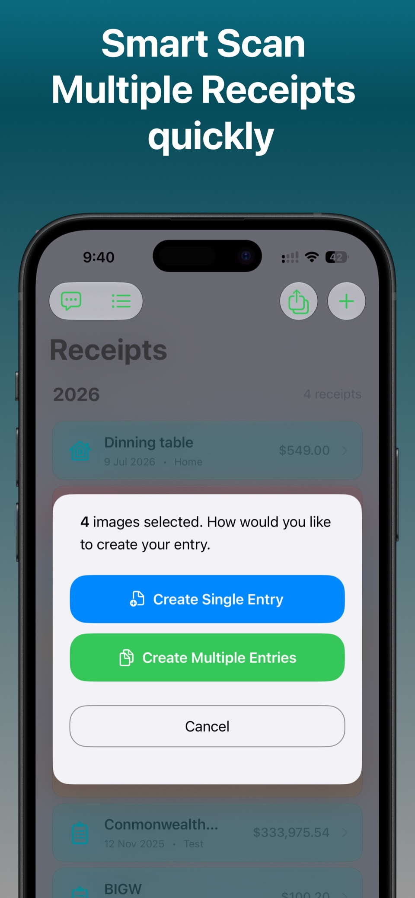
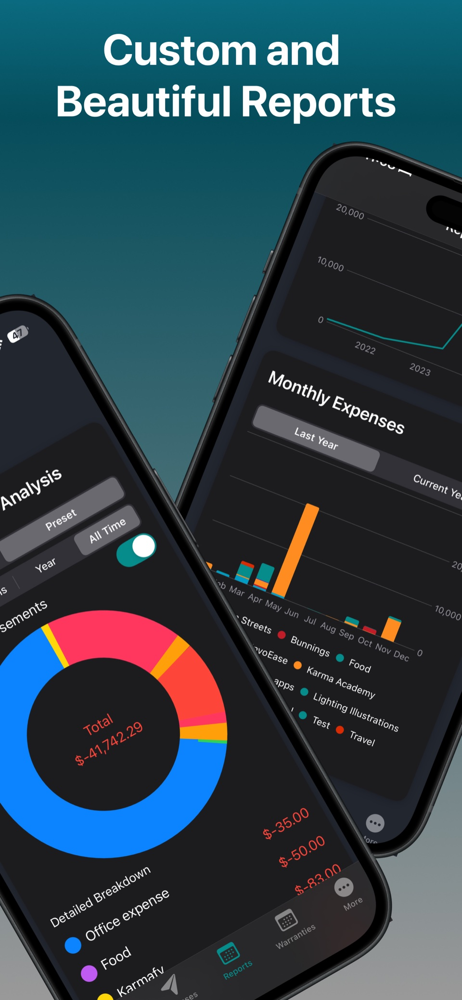
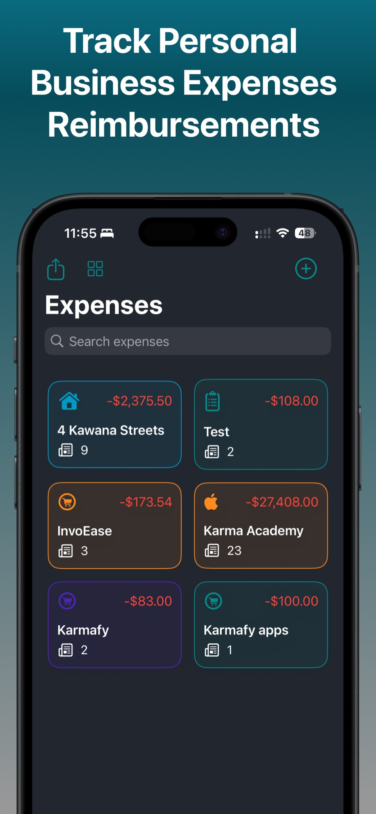
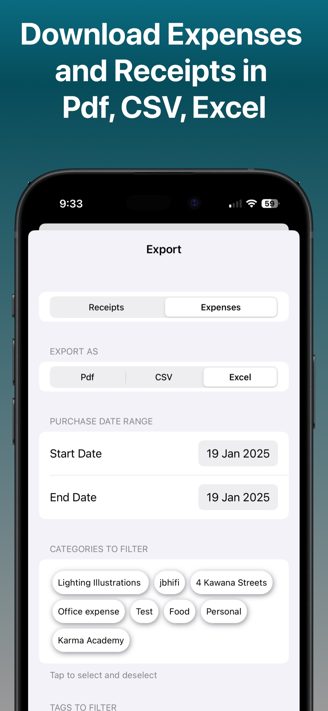
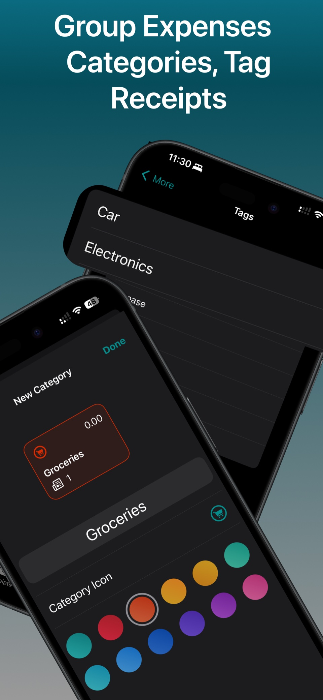
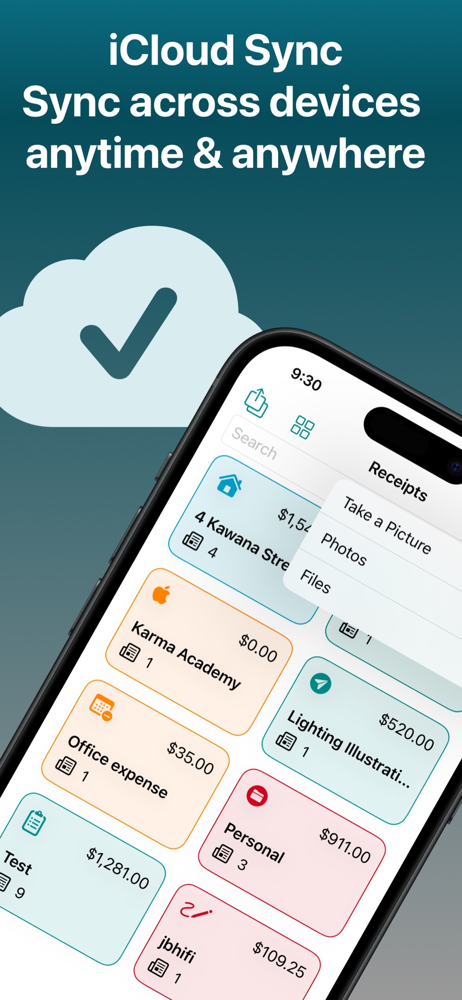
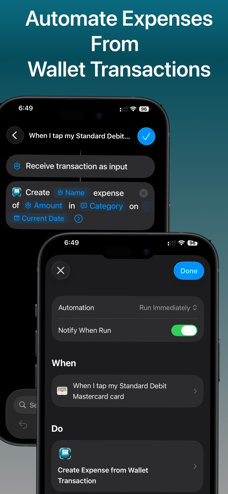

Warranty tracker
Add products to receipts, record warranty dates, and set reminders before coverage expires.
Receipts → products → remindersReceipt scanner app for iPhone & iPad
Scan receipts in seconds, organize every purchase, track expenses and warranties, then export the reports you need. Receiptly keeps it all together without making it complicated.

Receiptly connects the purchase to the things that matter afterwards: the expense, the reimbursement, the report, the warranty, and the moment you need to find it again.
Smart receipt scanning
Use the camera, Photos, or Files to add receipts. Smart Scan helps pull out key information, while batch receipt scanning turns multiple images into separate entries in one pass.


Expense tracker & reports
Group personal and business expenses, record credits and reimbursements, then see the bigger picture through daily, monthly, category, and custom reports.
Receipt and expense exports
Choose receipts or expenses, filter the date range, categories, and tags, then export a focused PDF, CSV, or Excel file for your own records or the people helping with them.
Export and full reports are available with Receiptly Pro.

Receipt organizer & iCloud sync
Use custom categories, colors, icons, and tags to make Receiptly fit your life. Search by merchant or purchase details, and keep records available across your Apple devices with iCloud sync.


Built for what happens next
Add products to receipts, record warranty dates, and set reminders before coverage expires.
Receipts → products → remindersChoose a receipt currency, save an exchange rate, and report the value in your home currency later.
Multi-currency trackingRecords stay on your device and, if enabled, in your iCloud. Optional Smart Scans can use advanced online processing when you turn them on.
Read the privacy policy
Apple Shortcuts automation
Connect Receiptly to a Wallet transaction automation in Shortcuts so a payment can become an expense without typing the amount again.
App Store reviews
“Does what I need without being overcomplicated.”
“Will make end of tax year a breeze.”
“Saved me so much time instead of using spreadsheets.”
Frequently asked questions
Need help with something else? Email support.
Smart Scan helps extract key receipt details so you can review and save the purchase without entering everything manually.
Yes. Select multiple images or capture several receipt photos, then create separate receipt entries in one batch.
Yes. Organize personal or business spending with categories and tags, and track expenses, income, credits, and reimbursements.
Receiptly can export receipt and expense information as PDF, CSV, or Excel files. Export is a Receiptly Pro feature.
Yes. Add products to a receipt, record their warranty dates, and use reminders to stay ahead of upcoming expiries.
Yes. Keep a home currency, choose another currency for a receipt, and store its exchange rate for later reporting and reimbursement.
Receipt data is stored on your device and can sync through your iCloud account. Smart Scans are optional and may send a reduced receipt image to Google AI services for advanced scanning when enabled. Read the full privacy policy.
Receiptly is free to download. Optional Receiptly Pro purchases unlock features such as unlimited Smart Scans, exports, and full reports.
Receiptly for iPhone & iPad
Scan it. Organize it. Find it when it matters.
 Free to download · Optional in-app purchases
Free to download · Optional in-app purchases